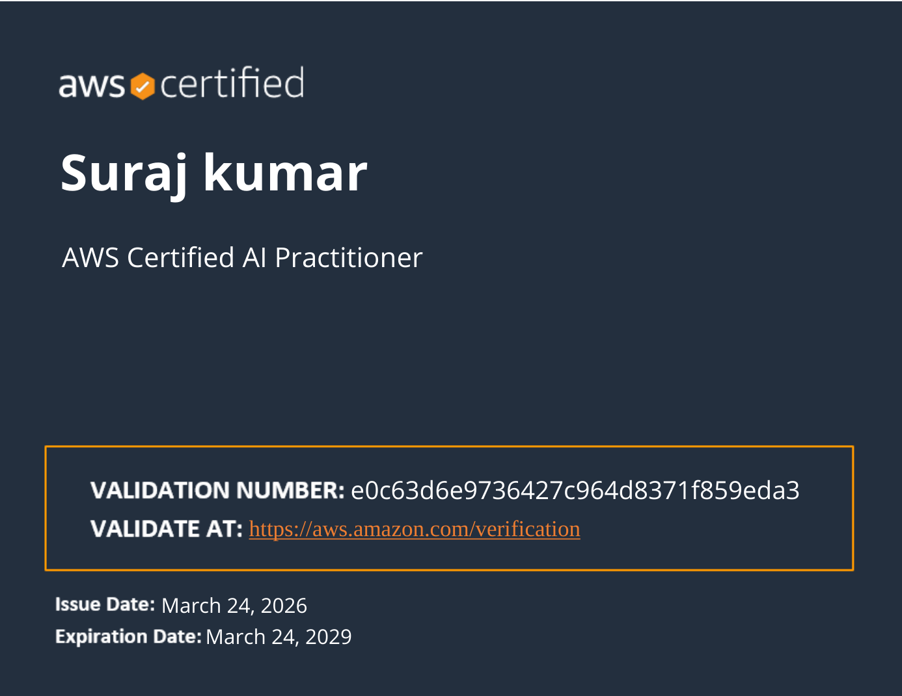
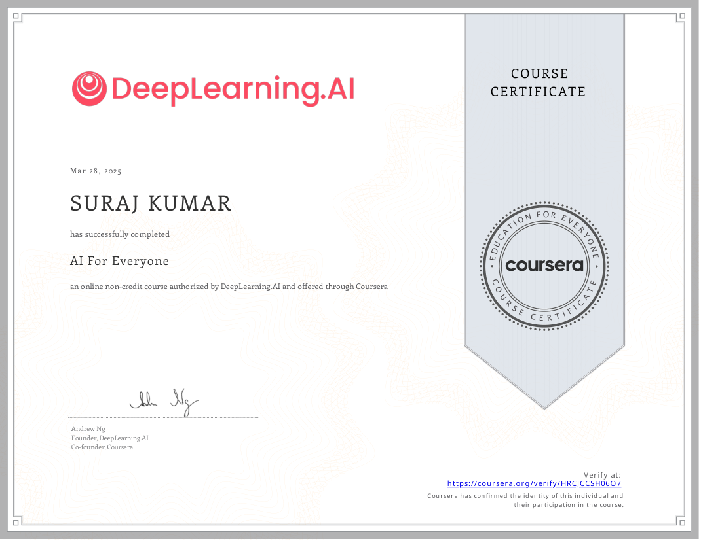
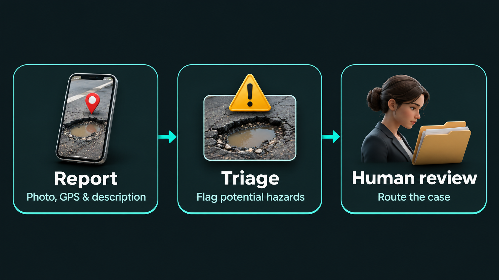
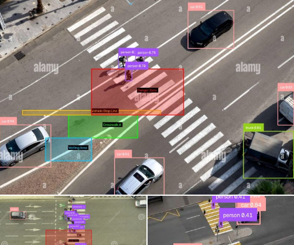
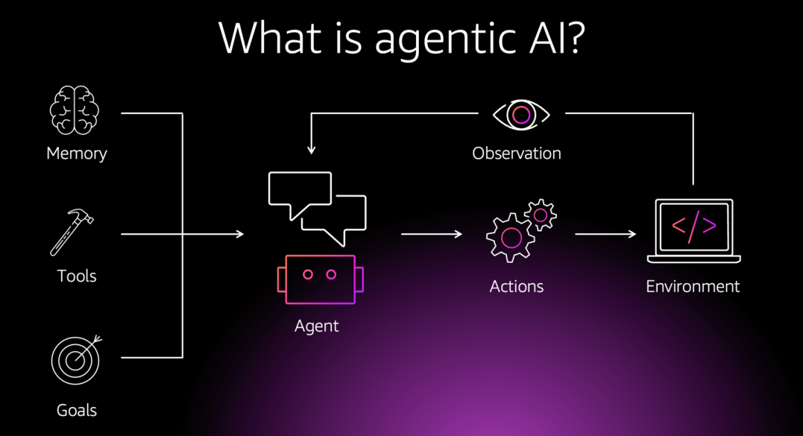
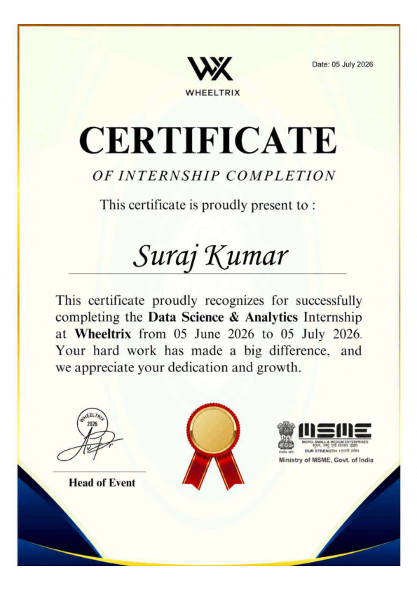

Amazon Web Services
AWS Certified Solutions Architect – Associate
Issued · April 2026
View certificate ↗CSE–AI student · KIET, Ghaziabad
Computer vision & applied AI
I build computer vision systems and explore how language models retrieve evidence, call tools, and use memory.
Suraj Kumar · KIET, Ghaziabad
I’m a B.Tech student in Computer Science and Artificial Intelligence at KIET Group of Institutions, Ghaziabad. I build computer vision and NLP applications, with an interest in how models behave on real inputs and how their outputs can be evaluated.
In computer vision, I’ve worked on counterfeit medicine detection using product images and a traffic safety system that detects pedestrians, tracks vehicles across video frames, and flags potential risks in a FastAPI dashboard.
During my Data Science & Analytics internship at Wheeltrix, I built TextSummarizer. It lets readers upload documents, choose between extractive and abstractive summaries, and compare the result with the source. I’m now exploring hybrid retrieval and reranking, with a focus on making AI answers easier to trace back to the passages that support them.
Get in touch ↓Technical skills
Tools I use to build computer vision pipelines, document retrieval, and AI applications.
Amazon Web Services
Issued · April 2026
View certificate ↗

Main project · Computer vision
An image-based research project exploring counterfeit medical product detection. The repository covers image cropping and feature extraction, YOLO and Vision Transformer training, inference, and evaluation.

Civic technology
Civic Visual Knowledge Intelligence brings together citizen photos, GPS, and local-language reports to flag potential hazards and prepare cases for human review.
View CVKI repository ↗
Traffic safety
A computer vision pipeline for pedestrian detection, vehicle tracking, and risk analysis, with results displayed in a FastAPI dashboard.
View traffic safety repository ↗
Agentic AI / RAG
A day-by-day Python lab for hybrid PDF retrieval, model tool calls, and persistent agent memory.
View Agentic AI repository ↗Client website · Events & catering
A live website for a Bangalore catering business. Visitors can explore services, menus, and event photos, then request a quote or make an enquiry on WhatsApp.
Wheeltrix · 5 June–5 July 2026
A document summarization app that accepts TXT, PDF, and DOCX files. It offers TF-IDF extractive summaries and DistilBART abstractive summaries, with adjustable length and ROUGE evaluation when a reference summary is supplied.
View TextSummarizer on GitHub ↗
For project ideas, collaborations, or roles in applied AI.
kumar009954@gmail.com
Connect